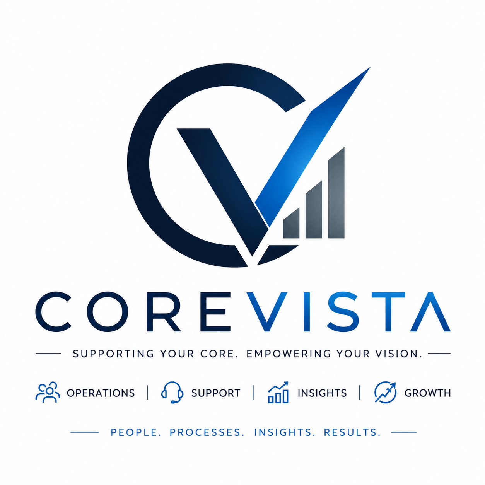

✉
Administrative Support
Email management, calendar scheduling, data entry, research, file organization, inbox cleanup, document prep, and daily task support.
People • Processes • AI • Insights • Growth
CentricVista provides reliable virtual assistant support, customer service, marketing assistance, AI workflow tools, and Power BI dashboards so business owners can save time, serve customers, and see what is happening inside their company.

Core Services
Start with remote support, then add marketing, AI automation, and dashboards as your business grows.
Email management, calendar scheduling, data entry, research, file organization, inbox cleanup, document prep, and daily task support.
Inbound calls, follow-ups, appointment setting, CRM updates, lead handling, client communication, and service reminders.
Social media scheduling, ad design support, content calendars, basic graphics, outreach lists, and campaign coordination.
AI prompts, response templates, SOP creation, chatbot planning, content drafts, email drafts, and repeat-task shortcuts.
Monthly growth reports, customer tracking, sales dashboards, supplier visibility, expense reporting, and executive summaries.
Task tracking, process documentation, team communication, weekly status reports, and workflow improvement for busy owners.
VA Packages
These packages are starter examples. You can change the hours, pricing, and deliverables before launching.
Best for owners who need help staying organized.
Best for sales, service, and appointment-heavy businesses.
Best for businesses that want support and visibility.
AI Services
CentricVista can help your assistants and business team use AI responsibly to work faster, communicate better, and reduce repetitive tasks.
A simple internal support system for your VAs: prompts, scripts, checklists, customer templates, and task guides in one place.
Power BI Advantage
CentricVista helps small businesses turn sales, customer, supplier, and financial information into simple monthly dashboards.
Pricing
Use these as placeholder prices while you validate the business model and final VA pay rates.
From $799/mo
For light admin support and basic customer follow-up.
From $1,499/mo
For businesses needing daily support and lead handling.
Custom
For VA support, AI workflow support, and dashboards together.
Booking Calendar
This booking section is ready for launch. Replace the placeholder button link with your Calendly, Google Calendar appointment link, or CRM booking page.
30 minutes to understand your business, your workload, and the support you need.
Open Booking LinkReplace this with your real booking link.
Testimonials
These are sample testimonials. Replace them with real client feedback after your first clients.
“CentricVista helped us organize our inbox, follow up with customers faster, and stay on top of appointments.”
Small Business Owner“The dashboard made it easy to understand monthly growth and where our leads were coming from.”
Service Company Manager“The AI templates helped our assistant answer common questions faster and stay consistent.”
Operations LeadAbout CentricVista
CentricVista was built to help small businesses operate with more focus and less stress. The name represents support for the core functions of a business and a clear vista into what is happening through better reporting and visibility.
CentricVista can grow beyond virtual assistants into AI support, business intelligence, operations consulting, and remote team management.
Recruiting Page
This section is for future applicants, especially remote assistants, customer service specialists, appointment setters, marketing assistants, and Power BI support talent.
FAQ
No. CentricVista can start with VA support but is designed to expand into AI services, Power BI dashboards, business operations, and consulting.
Yes. You can offer part-time, full-time, or custom support packages depending on client needs.
AI email templates, SOPs, prompt libraries, content drafts, chatbot planning, customer response scripts, and workflow improvement.
Yes. The website includes a Power BI section for monthly reports, sales tracking, customer reports, supplier visibility, and growth dashboards.
Contact
Replace the email and phone number below with your official business information.
Email: info@centricvista.com
Phone: +1 (555) 000-0000
Services: VA Support, AI Services, Customer Service, Marketing Support, Power BI Dashboards